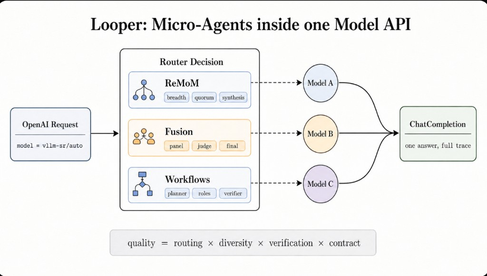
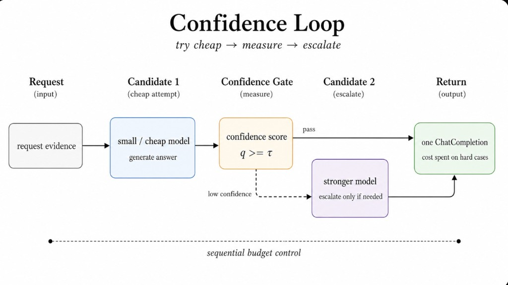
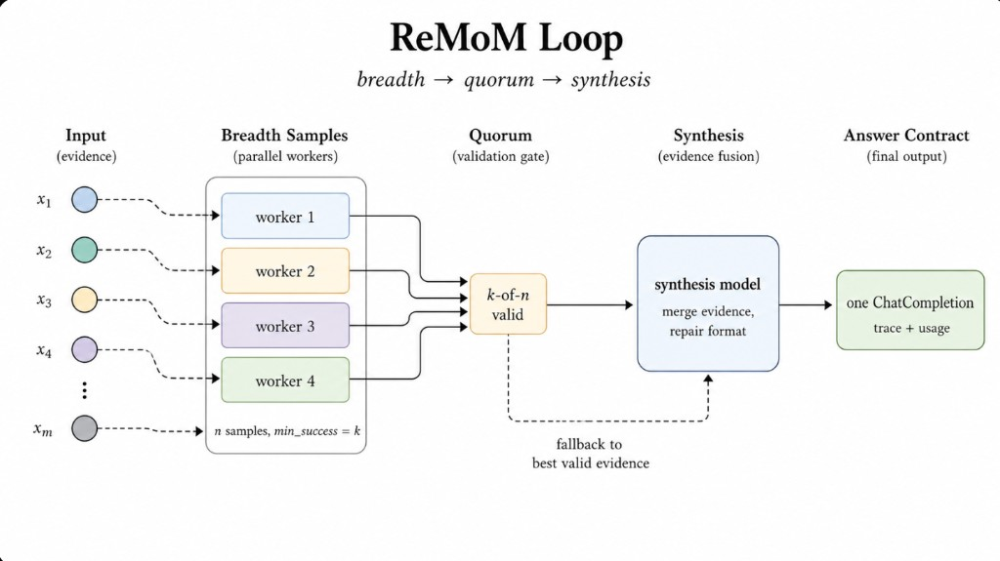
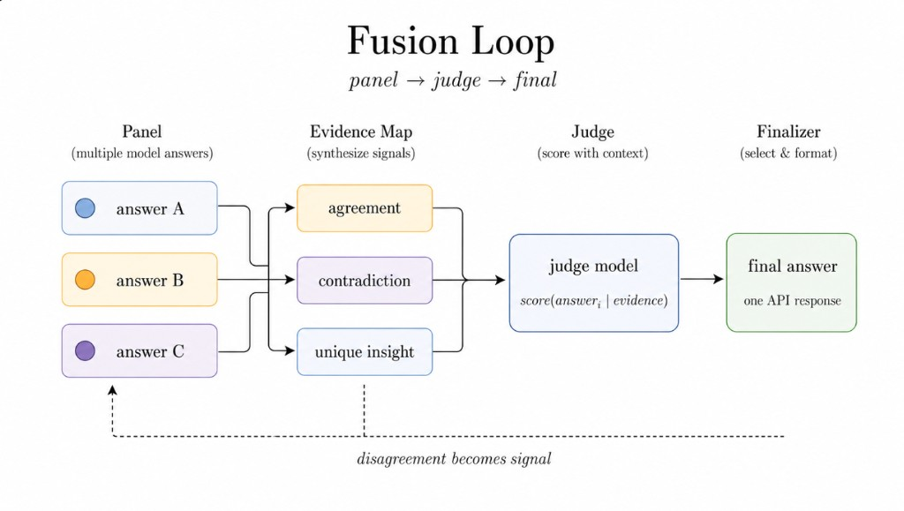
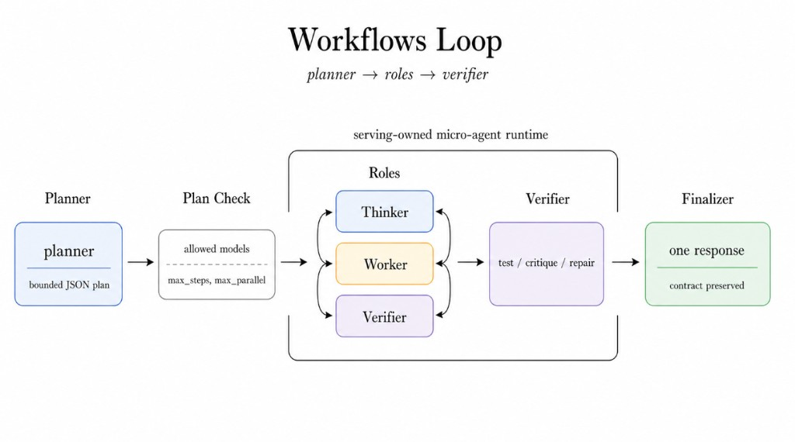
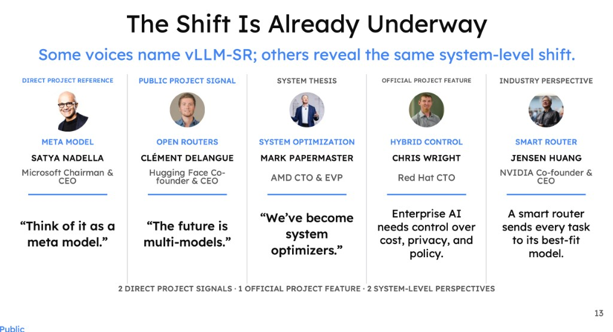
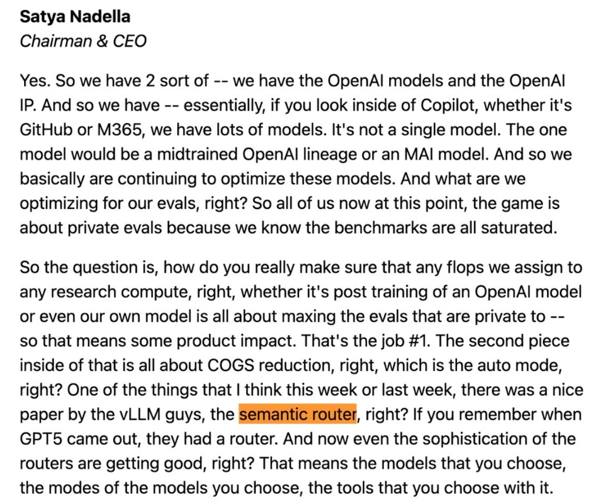
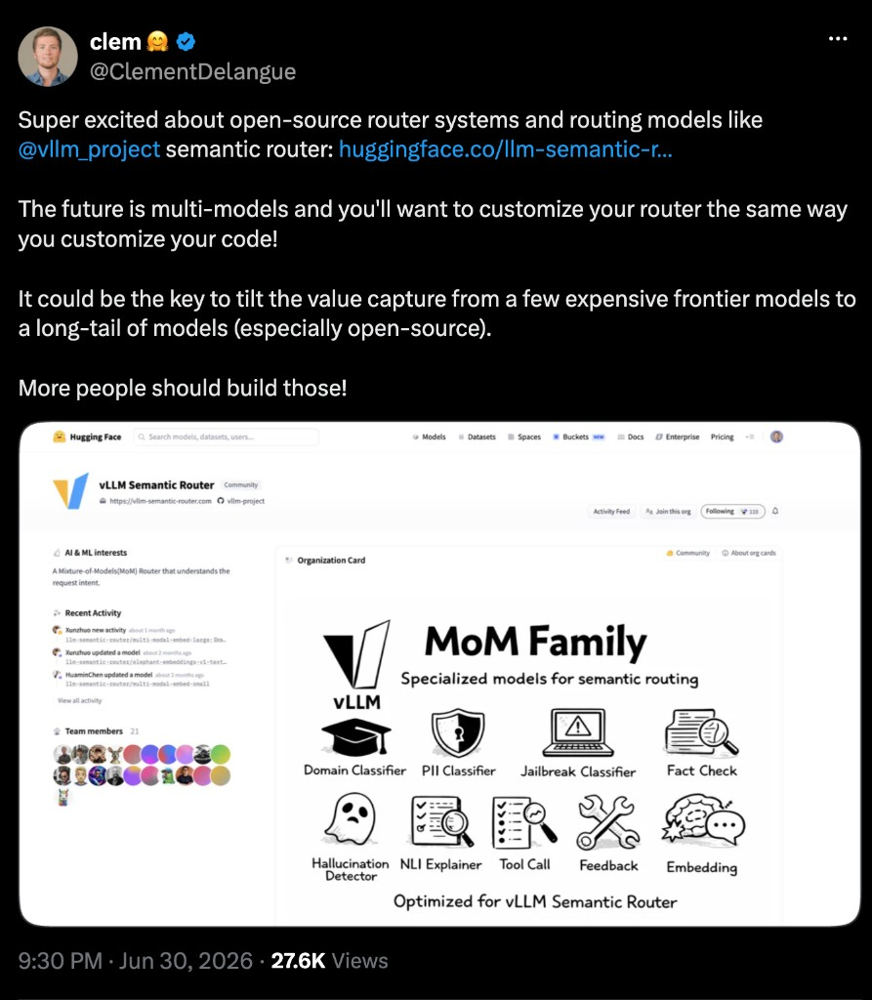
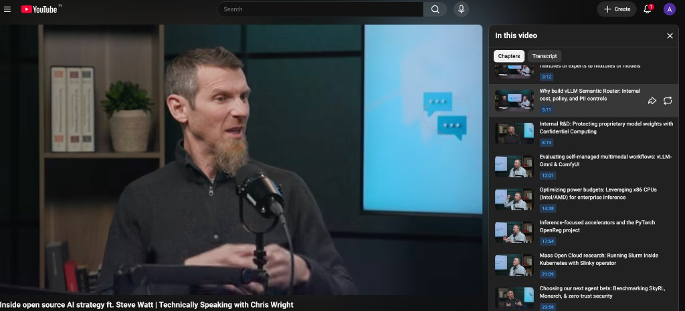

Intelligent Routing for LLM Inference
Press → or Space to begin
A technical deep dive into vLLM Semantic Router — how content-aware, policy-driven routing brings intelligence to enterprise LLM inference.
We'll cover architecture, signals & decisions, real-world use cases, and integration with the llm-d inference stack on Kubernetes.
Navigate with arrow keys, spacebar, or click the dots below.
The model ecosystem becomes fragmented.
Every application must independently navigate four dimensions of fragmentation — models, compute, location, and preference.
Without a programmable routing layer, you get spaghetti architecture. vLLM Semantic Router is that gateway.
Mixture-of-Models needs a content-aware router at the gateway.
AI token spend is emerging as a new enterprise resource—one that finance must learn to forecast, allocate, and optimize against the value it delivers.
“I'm back to the drawing board — the budget I thought I would need is blown away already.”
“If you can't draw a direct line to useful features you're shipping, that trade becomes harder to justify.”
Enterprise AI spend is exploding. Without intelligent routing, every request hits the most expensive model.
Semantic Router routes simple queries to free local models — keeping 86% of traffic off cloud APIs.
Cost optimization starts at the routing layer.
As enterprise gen AI moves from prototypes to production, organizations deploy multiple models. Local, cloud, specialized, general-purpose.
Without semantic awareness, the infrastructure can't enforce data policies, optimize for cost, or ensure safety.
vLLM Semantic Router solves this by making the routing layer content-aware.
Pre-allocate the intelligence before forwarding it.
Instead of blind load balancing, the router understands what each request needs before it hits a model.
It reads intent, domain, and risk from the prompt and context, then composes the right model, mode, and tools.
Intelligence moves upstream — decisions happen at the gateway, not inside every application.
Right time, Right people, Right community
GPT-5 made auto routing visible to the world — validating the idea that models should be selected automatically.
The vLLM community was ready: open-source serving infrastructure met semantic routing at exactly the right moment.
Public launch in September 2025 — from prototype to thousands of GitHub stars in months.
Semantic routing complements serving — it does not replace it.
vLLM Semantic Router sits at the gateway — it decides what logical model handles each request.
The serving layer (vLLM, llm-d, AIBrix) decides how to run it. Backends are the actual inference engines.
WHAT → WHICH → HOW + WHERE. Three layers, one request path.
The router sits transparently between clients and backends. Clients send requests to port 8899 using standard OpenAI-compatible APIs.
Envoy's External Processing filter (ExtProc) intercepts each request via gRPC, classifies it, and routes to the right model.
Clients always send model: "auto". The router selects the actual backend transparently.
vLLM Semantic Router is fully open source and designed to integrate with any OpenAI-compatible backend.
The Athena 0.2 release includes 11 model selection algorithms, from static routing to Elo-based learning and Thompson sampling.
One router, many models, automatic optimization.
Decisions are evaluated highest priority first. The first matching rule wins. Safety rules at P90+ always fire before routing decisions.
Every response includes x-vsr-* headers for full observability. You can see exactly which decision fired and why.
The DSL compiles human-readable rules into optimized YAML, Kubernetes CRDs, or Helm values.
The pretrained embedding model (all-MiniLM-L6-v2) achieves only 80.4% accuracy for complexity-tier classification.
Using BatchAllTripletLoss with synthetic data generation, we pushed accuracy to 98.5%. A +18% improvement with just 805 training examples.
For telecom and enterprise workloads, accurate routing means 86% of requests stay on free local models.
Accurate routing is the foundation for every use case: cost optimization only works if requests actually land on the right model.
Even with fine-tuning, routing is layer one of defense in depthguardrails and egress controls must still backstop misclassifications.
Loss function selection mattered more than data volume: +18% from the right loss vs. +2% from more data.
A route becomes scalable, observable, versioned and extensible.
Every routing decision flows through a governable pipeline: raw signals become projections, projections drive policy decisions, algorithms execute, and plugins extend behavior.
The replay loop makes routes observable and versioned — you can audit, reproduce, and extend any decision path.
Scalable, observable, versioned, extensible — intelligence you can trust in production.
Unlock the power of collective intelligence





Looper turns one OpenAI-compatible API into a collaboration layer — routing, sampling, judging, and verifying across multiple models behind a single ChatCompletion contract.
Four patterns: SELECT (pick one), CASCADE (escalate on confidence), FUSION (panel + judge), WORKFLOW (micro-agent roles).
quality = routing × diversity × verification × contract
Question: Can a router make the model better? Yes — realtime test-time scaling in vLLM-SR via multi-model collaboration.
LiveCodeBench (92.6): VSR Closed beats Fugu Ultra, Fugu, and GPT 5.5 on 175-question Jan–Apr 2025 set.
GPQA-Diamond (96.0): tops Fugu Ultra, Mythos Preview, Gemini 3.1 Pro, and Opus 4.8 on 50-question formal subset.
Humanity's Last Exam (47.1 hybrid): competitive with frontier models on 2,158 text-only items.
Beat frontier models with open-model collaborations.




Subtitle: Some voices name vLLM-SR; others reveal the same system-level shift.
Satya Nadella (Microsoft): "Think of it as a meta model." — direct project reference.
Clément Delangue (Hugging Face): "The future is multi-models." — public project signal.
Mark Papermaster (AMD): "We've become system optimizers." — system thesis.
Chris Wright (Red Hat): enterprise AI needs control over cost, privacy, and policy.
Jensen Huang (NVIDIA): a smart router sends every task to its best-fit model.
2 direct project signals · 1 official project feature · 2 system-level perspectives
Subtitle: One API contract. One model identity. No client-side routing.
Callers — Codex, Claude Code, OpenCode — all use the same model ID: vllm-sr/mom-balanced-v1.
One contract for every client: name · variant · version. The router executes the bounded model path behind the scenes.
Model-level evaluation: GPQA-Diamond (expert reasoning), Humanity's Last Exam (challenging tasks), LiveCodeBench (code generation).
Evaluate the Mixture-of-Models end to end, like a single model.
Semantic routing handles the majority of cases, but even with fine-tuned models, there must be stopgaps.
Data sensitivity ranking paired with evaluation guardrails and egress controls creates defense in depth for AI sovereignty.
For regulated industries: routing classifies, guardrails validate, egress controls enforce.
Athena ships with neural classifiers built on mmBERT-32K. Supporting 1,800+ languages. They run as routing signals, not standalone guardrails.
Safety rules at priority 90+ fire before any routing decision. A jailbreak attempt is blocked before it ever reaches a model.
Egress guardrails are the final stopgap. Even if a harmful response is generated, it's filtered before reaching the user.
model: "auto" and the router handles the rest. One codebase, multiple models, automatic optimization.
A single agent task can generate 10-50+ LLM calls. Tool lookups, code generation, reasoning, summarization.
Without routing, every call hits the same expensive model. With semantic routing, each call goes to the right model at the right cost.
Agents gain multi-model intelligence transparently. No SDK changes, no model selection logic in agent code.
The Semantic Router handles the "what". Content classification, policy enforcement, model selection.
LLM-d handles the "how". KV-cache indexing, prefix-hash routing, GPU/CPU/storage tiering for maximum throughput.
Deploy anywhere, route intelligently, serve efficiently.
The Semantic Router classifies and routes.sensitive data never leaves the data center. LLM-d optimizes local inference with KV-cache reuse.
But even with perfect routing, model outputs can leak sensitive data. Egress guardrails are the final stopgap. Scanning responses before delivery.
Routing covers ingress. Guardrails cover egress. Together: no sensitive data escapes.
Open-source Mixture-of-Models control plane — built in the open, adopted in production.
A cross-industry community: hardware, cloud, research, and enterprise co-building the open Mixture-of-Models stack.